<footer>
  <div fxLayout="column" fxFlex="100%" fxLayoutAlign="center center">
    <div fxLayoutAlign="center center" class="footer-author">
      
      <span>Sara Esteban Miguel</span>
    </div>
    <div
      fxLayout="row wrap"
      fxLayout.xs="column"
      fxLayoutGap="50px"
      fxLayoutGap.xs="11px"
      fxLayoutAlign="center center"
      class="footer-logos"
    >
      <a
        fxLayoutAlign="center center"
        href="https://angular.io"
        title="Developed in Angular"
      >
        
        <span>Developed in Angular</span>
      </a>
      <a
        fxLayoutAlign="center center"
        href="https://www.themoviedb.org"
        title="Powered by TMDB API"
      >
        
        <span>Powered by TMDB API</span>
      </a>
      <a
        fxLayoutAlign="center center"
        href="https://www.freepik.es"
        title="Pictures from Freepik"
      >
        
        <span>Pictures from Freepik</span>
      </a>
      <a
        fxLayoutAlign="center center"
        href="https://www.uoc.edu"
        title="Universitat Oberta de Catalunya"
      >
        
        <span>Universitat Oberta de Catalunya</span>
      </a>
    </div>
  </div>
</footer>
